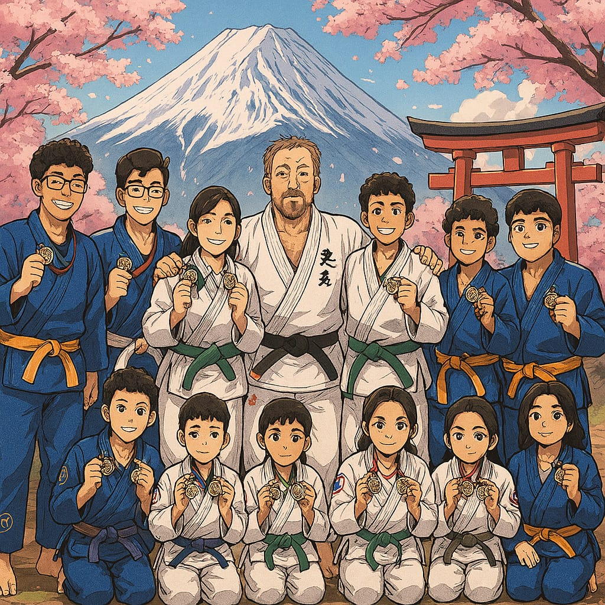
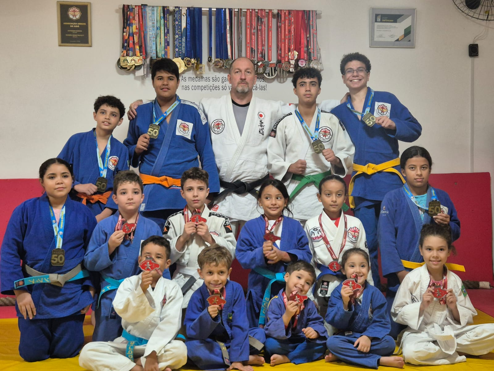

ASSOCIAÇÃO AMIGOS DO JUDÔ SP
AULAS DE JUDÔ PARA ADULTOS E CRIANÇAS.
Oferecemos aulas de Judô para todas as idades, desde crianças até adultos, em um ambiente acolhedor e seguro. Nossas aulas são planejadas para promover o desenvolvimento físico, mental e social, através de técnicas e valores do Judô, como respeito, disciplina e perseverança. Além de melhorar a coordenação motora, força e flexibilidade, o Judô também ensina a importância do trabalho em equipe e do autocontrole. Venha praticar e se divertir enquanto aprende uma arte marcial milenar!



Horários das Aulas
- Segunda, Quarta e Sexta
- 🥋 Iniciantes (Todas as idades) - 17:45h às 18:45h
- 👦 Infantil (5 a 8 anos) - 18:45h às 19:40h
- 💪 Intermediario (9 a 17 anos) - 19:45h às 20:45h
- 🎖️ Adultos e Veteranos - 20:50h às 21:50h
Visite Nosso Dojô
Av Guarapiranga, 2258 - São Paulo
Entrem em contato e marque uma visita ao Dojô. Nossas redes socias 👇
YouTube